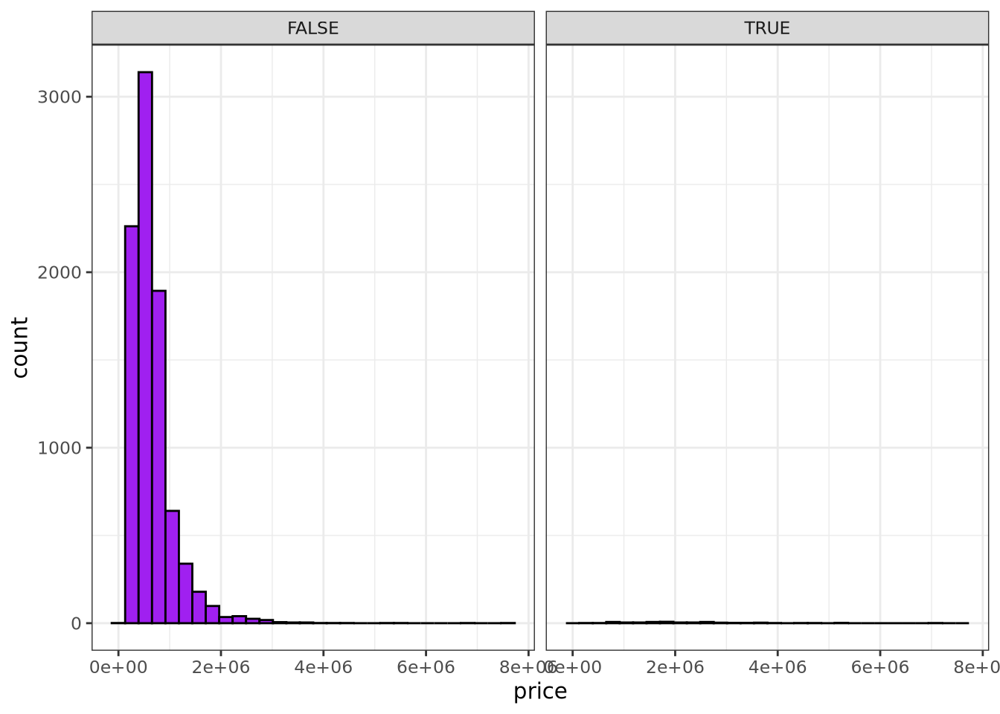

1 + 1[1] 2Quarto enables you to weave together content and executable code into a finished document. To learn more about Quarto see https://quarto.org.
When you click the Render button a document will be generated that includes both content and the output of embedded code. You can embed code like this:
1 + 1[1] 2You can add options to executable code like this
[1] 4The echo: false option disables the printing of code (only output is displayed).
\[y = mx + b\]
Multiplying 7 by 14 gives us the result 98.
[1] TRUElibrary(tidyverse)
library(moderndive)
glimpse(house_prices)Rows: 21,613
Columns: 21
$ id <chr> "7129300520", "6414100192", "5631500400", "2487200875", …
$ date <date> 2014-10-13, 2014-12-09, 2015-02-25, 2014-12-09, 2015-02…
$ price <dbl> 221900, 538000, 180000, 604000, 510000, 1225000, 257500,…
$ bedrooms <int> 3, 3, 2, 4, 3, 4, 3, 3, 3, 3, 3, 2, 3, 3, 5, 4, 3, 4, 2,…
$ bathrooms <dbl> 1.00, 2.25, 1.00, 3.00, 2.00, 4.50, 2.25, 1.50, 1.00, 2.…
$ sqft_living <int> 1180, 2570, 770, 1960, 1680, 5420, 1715, 1060, 1780, 189…
$ sqft_lot <int> 5650, 7242, 10000, 5000, 8080, 101930, 6819, 9711, 7470,…
$ floors <dbl> 1.0, 2.0, 1.0, 1.0, 1.0, 1.0, 2.0, 1.0, 1.0, 2.0, 1.0, 1…
$ waterfront <lgl> FALSE, FALSE, FALSE, FALSE, FALSE, FALSE, FALSE, FALSE, …
$ view <int> 0, 0, 0, 0, 0, 0, 0, 0, 0, 0, 0, 0, 0, 0, 0, 3, 0, 0, 0,…
$ condition <fct> 3, 3, 3, 5, 3, 3, 3, 3, 3, 3, 3, 4, 4, 4, 3, 3, 3, 4, 4,…
$ grade <fct> 7, 7, 6, 7, 8, 11, 7, 7, 7, 7, 8, 7, 7, 7, 7, 9, 7, 7, 7…
$ sqft_above <int> 1180, 2170, 770, 1050, 1680, 3890, 1715, 1060, 1050, 189…
$ sqft_basement <int> 0, 400, 0, 910, 0, 1530, 0, 0, 730, 0, 1700, 300, 0, 0, …
$ yr_built <int> 1955, 1951, 1933, 1965, 1987, 2001, 1995, 1963, 1960, 20…
$ yr_renovated <int> 0, 1991, 0, 0, 0, 0, 0, 0, 0, 0, 0, 0, 0, 0, 0, 0, 0, 0,…
$ zipcode <fct> 98178, 98125, 98028, 98136, 98074, 98053, 98003, 98198, …
$ lat <dbl> 47.5112, 47.7210, 47.7379, 47.5208, 47.6168, 47.6561, 47…
$ long <dbl> -122.257, -122.319, -122.233, -122.393, -122.045, -122.0…
$ sqft_living15 <int> 1340, 1690, 2720, 1360, 1800, 4760, 2238, 1650, 1780, 23…
$ sqft_lot15 <int> 5650, 7639, 8062, 5000, 7503, 101930, 6819, 9711, 8113, …house_prices %>%
filter(bedrooms >=4 & bedrooms <=6) %>%
group_by(waterfront) %>%
summarize(avg_price = mean(price), min_price = min(price), max_price = max(price), n = n())# A tibble: 2 × 5
waterfront avg_price min_price max_price n
<lgl> <dbl> <dbl> <dbl> <int>
1 FALSE 657529. 100000 7700000 8692
2 TRUE 2247709. 340000 7062500 63house_prices %>%
filter(bedrooms >=4 & bedrooms <= 6) %>%
ggplot(aes(x = price)) +
geom_histogram(color = "black", fill = "purple") +
facet_wrap(vars(waterfront)) +
theme_bw()